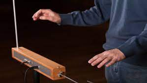
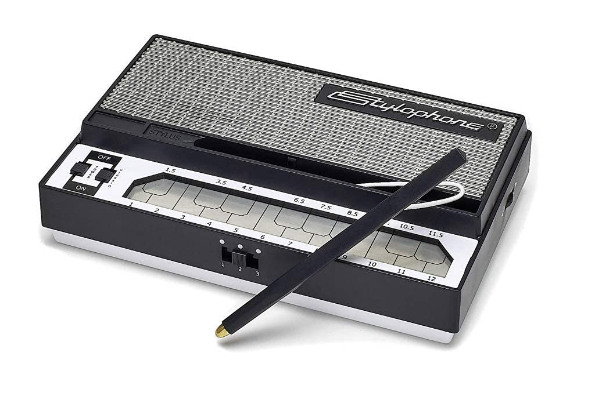
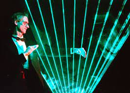
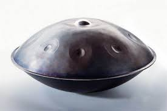

Bu görmüş olduğunuz müzik aleti Benjamin Franklin Tarafından İcat Edilmiştir, Bu Müzik Aletini Dinleyen İnsanların Kısa Süreliğine Akıl Sağlığını Yitirdiği Gibi Garip Şeyler Söylenmektedir

İlk Elektronik Müzik Aletidir Ve Çalarken Temas Etmenize Gerçekten Gereken Yoktur

Stylophone, kalemle çalışan minyatür bir klavyedir. 1967'de Brian Jarvis tarafından icat edilen Brian Jarvis, 1968'de üretime girdi. Bir metal klavyeye bir kalemle dokunarak çalındı

A laser harp is an electronic musical user interface and laser lighting display. It projects several laser beams played by the musician by blocking them to produce sounds, visually reminiscent of a harp.

Tamamen çelikten üretilen Hang, kucağa yerleştirilip, el ve parmaklar kullanılarak çalınır. İdiofon'lar grubuna giren enstrümanın, arp, gong ya da armonik tınıları andıran bir sesi vardır. Yüzeyinde bulunan küçük çukurlara vurularak titreşim yoluyla farklı sesler ve notalar elde edilir.